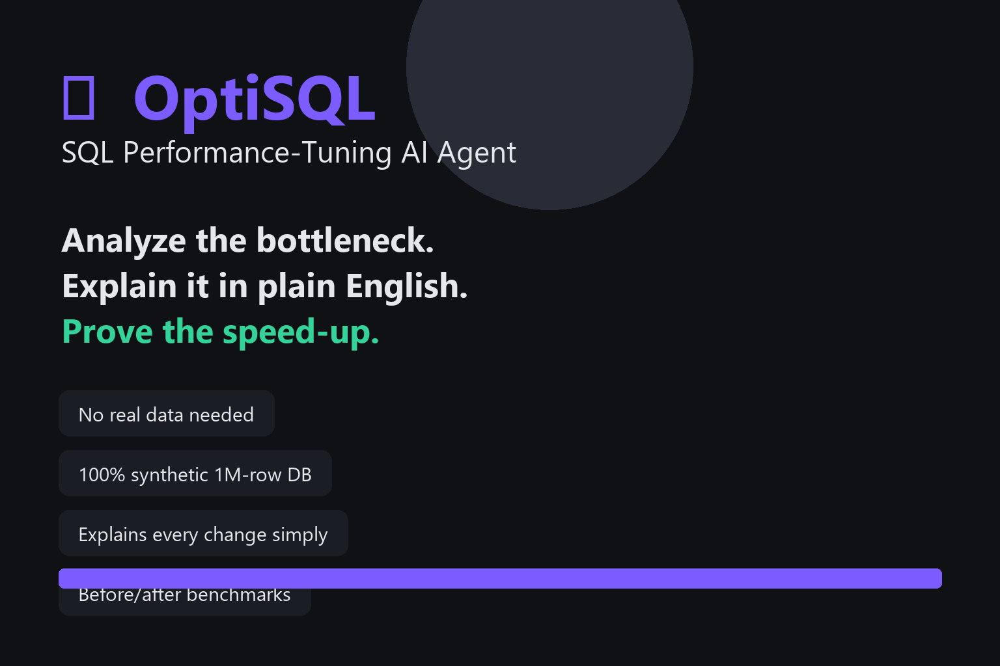
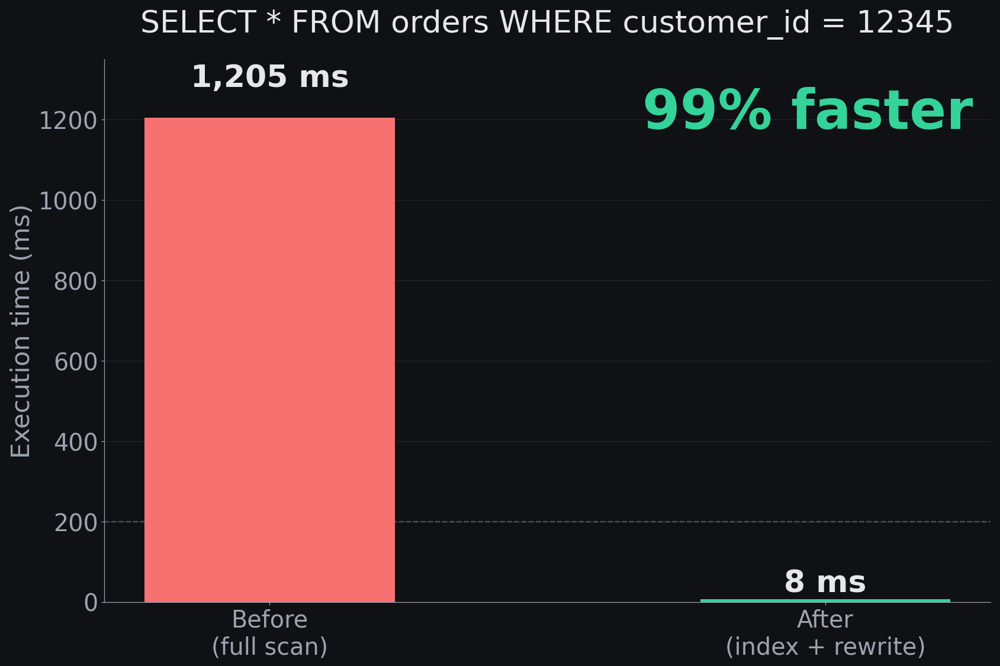
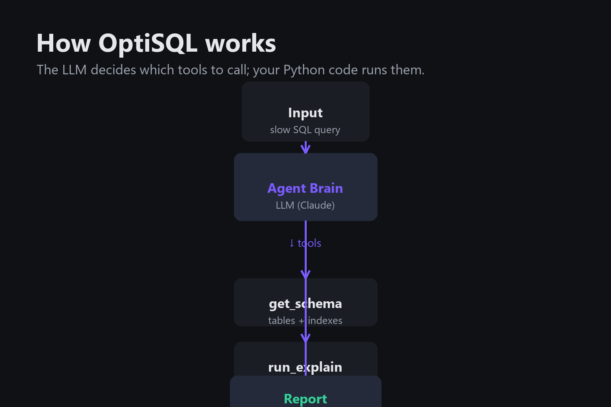
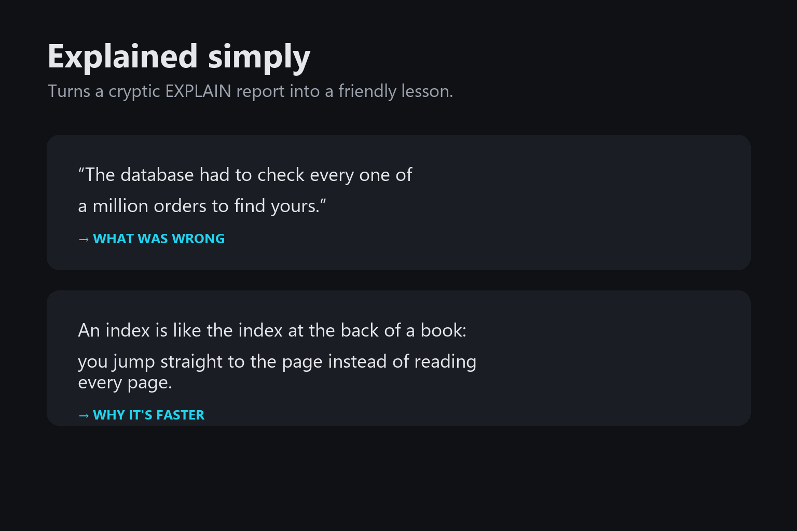

What it does
OptiSQL is an AI agent that analyzes slow SQL queries against a realistic e-commerce database, diagnoses the bottleneck in plain English, recommends indexes or query rewrites, and proves the speed-up with before/after benchmarks — all on a 1-million-row database.
🔍 Diagnoses
Runs EXPLAIN to find full table scans, missing indexes, and other performance bottlenecks.
🛠️ Fixes
Adds the index or rewrites the query — safely on a copy of the database. Never touches your real data.
📊 Proves
Real before/after median timings. Shows exactly how much faster your query became.
🗣️ Explains
Every fix ends with a plain-English walkthrough — like a senior engineer showing their work to a junior.
Performance

| Query | Before | After | Speed-up |
|---|---|---|---|
SELECT * FROM orders WHERE customer_id = 12345 |
~1,200 ms | ~8 ms | ~99% |
SELECT COUNT(*) FROM orders WHERE status = 'pending' |
~950 ms | ~15 ms | ~98% |
SELECT ... FROM orders WHERE order_date >= '2024-01-01' |
~1,100 ms | ~12 ms | ~99% |
How it works

The LLM can't touch the database directly. Instead it's given a small set of safe Python functions ("tools") it can call. It decides which tool to call and when; the Python code actually runs it and hands back the result. This tool-calling loop is the heart of every AI agent.
def get_schema(): # lists all tables + columns
def run_explain(sql): # returns the query plan
def benchmark_query(sql): # median of 5 runs
def create_index_on_copy(table, column): # only on shop_copy.db
Safety by design
🛡️ Read-only by default
No DROP, DELETE, UPDATE, or INSERT in the analysis path. The agent can only read data.
📋 Copy-only writes
create_index only ever modifies a copy (shop_copy.db). The original is untouched.
⏱️ Bounded loops
A max-iterations cap stops the agent loop from running forever. No runaway costs.
🔐 Signed builds
Every extension release is Ed25519-signed. The extension detects tampering before loading.
In the marketplace

Search for "optisql-tuner" in the VS Code Extensions view, or install directly from the Marketplace.
Explained simply

Every report ends with a "What I changed, explained simply" section — a friendly, jargon-free walkthrough written for a complete beginner. No database knowledge needed to understand what the agent did and why it's faster.